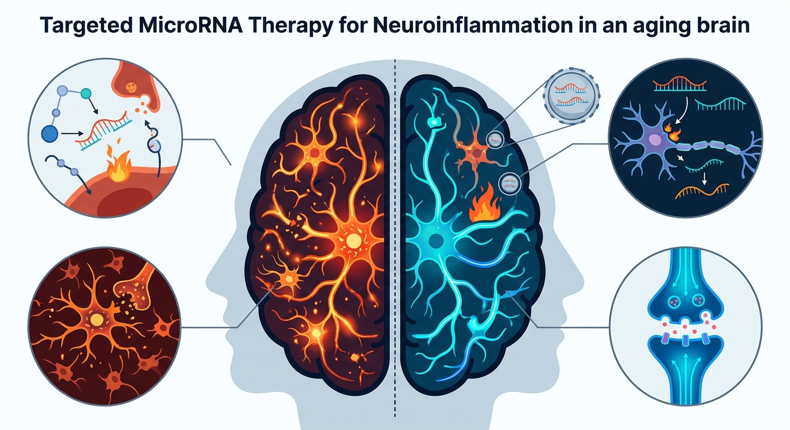

Rewiring the Aging Brain: How Targeted MicroRNA Therapy Could Halt Neuroinflammation and Cognitive Decline

Imagine the human brain as a hyper-connected metropolis where micro-channels of biochemical signals maintain order across billions of neural neighborhoods. In an aging brain, however, these communications deteriorate into molecular chaos. Chronic neuroinflammation ignites like a slow-burning wildfire, causing cortical atrophy and clearing the runway for devastating neurodegenerative conditions like Alzheimer's disease. For decades, biotech developers focused almost exclusively on clearing late-stage protein debris, often intervening too late to save dying neurons. Now, a growing consensus in longevity medicine points toward a deeper, upstream driver: the dysregulation of epigenetic orchestrators known as microRNAs.
At the center of this paradigm shift is the pivotal discovery that specific small non-coding RNAs act as primary toggles for neuroinflammation and age-related cellular senescence. In particular, aberrant expression of molecules like miR-10a-5p acts as a signal flare that drives microglia into a hyper-inflammatory state, dampening synaptic resilience and promoting neural decay. By introducing targeted miR-10a-5p inhibitors, researchers can effectively disarm this toxic signaling cascade. Think of it as hitting the master reset button on an overheated server: modulating these microRNA levels silences inflammatory cytokine production, rescues synaptic plasticity, and restores homeostatic balance to vulnerable cortical circuits.
The broader implications for longevity medicine are immense. Rather than waiting for irreversible structural loss or cognitive collapse, microRNA-targeted therapeutics allow clinicians to intervene at the fundamental cellular hallmark level—specifically targeting senescence and chronic tissue inflammation. Because microRNAs travel naturally in lipid nanoparticles and exosomes, this approach provides a versatile platform for precision therapeutics capable of crossing the blood-brain barrier. For investors and scientists alike, this represents a crucial turn toward modifying the underlying pace of brain aging rather than merely managing its final symptoms.
However, turning these mechanistic breakthroughs into clinical reality requires navigating significant hurdles. Rodent models of neurodegeneration, while informative, fail to replicate the complex decades-long pathobiology, microglial diversity, and genetic architecture—such as APOE4 variants—present in aging human patients. Furthermore, delivering nucleic acid therapies specifically to affected neural tissues without triggering off-target immune reactions or peripheral toxicity remains a formidable drug delivery challenge. Until long-term safety, dose durability, and human target engagement are rigorously validated in early-phase clinical trials, this promising frontier remains a brilliant proof-of-concept on a long road to the pharmacy shelf.
Sources & Citations:
Primary Source: pubmed.ncbi.nlm.nih.gov (Web Source)
- Primary Reference: PubMed PMID 35728834. MicroRNA-mediated regulation of neuroinflammation and senescence in age-related neurodegeneration. Available at: https://pubmed.ncbi.nlm.nih.gov/35728834/